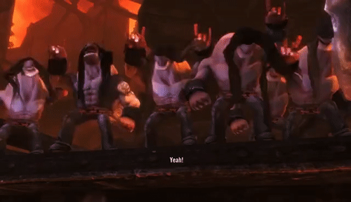
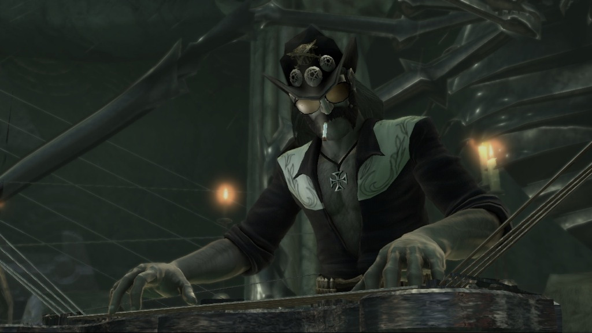
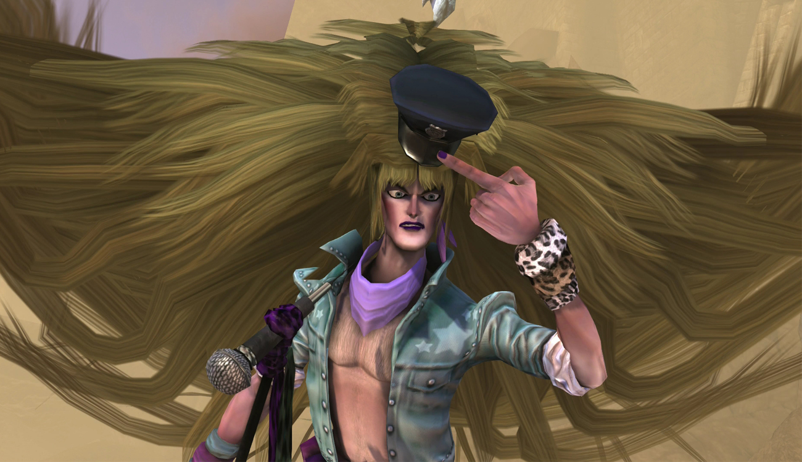

Approchez, approchez, et venez découvrir...
LE MÉTAL !
Le métal, plus qu'une musique !
Si le terme métal désigne avant tout la musique de style métal, le terme englobe aujourd'hui de nombreux sous-genre mais également
un mode de vie, parfois même une philosophie.
Si les médias véhiculent une image presque caricaturale de la musique et de ceux qui l'écoutent, la véritée est tout autre même si certains
s'amusent de ces caricatures et n'hésite pas à la surjouer lors d'interview ou autres reportages. On peut citer, par exemple, la tradition du
Petit Journal de montrer des images de festivaliers montrants leurs fesses à la caméra, offrant des image folkloriques de ces festivals.
INSERE IMAGE REPORTAGE
Le style
Les métalleux, terme employé pour désigner ceux qui écoutent de la musique métal, ne sont pas de nature très discrète. Ces animaux rares
sont facilement reconnaissables par leurs longs cheveux soyeux et, bien souvent, par une longue barbe. De nombreux
métalleux apprécies les modifications corporelles commes les tatouages ou les percings afin de marquer de manière plus significative leur appartenance à cette joyeuse communauté.
Pour ce qui est des vêtement, le métalleux appréciera d'avantage les vêtements noirs. Il porte bien souvent des tshirts de ses groupes préféré,
afin d'attirer le regard des ses confrères appréciant les mêmes groupes et ainsi partager avec eux une discussion enflammée ou, la plupart du temps, une bière autour
d'un sacrifice de vierge.
Un élément important du style vestimentaire des métalleux est la veste à patch. Véritable tableaux de chasse en jean, cette veste permet de montrer
le parcours effectué par celui qui la porte. Le principe de cette veste est très simple, il consiste à s'acheter une veste en jean et d'y coudre
des insignes représentant les logo des différents groupes vu en concert par son porteur. La possession de cette veste entraine un sentiment de fierté et
d'accomplissement chez le métalleux, ce qui le poussera à continuer son parcours à travers les fosses de concert pour tous les attraper.
La philoso... quoi ?
Bien que chacun possède sa propre philosophie et mode de vie, on retrouve une forme de courant de pensé récurrent chez un grand nombre de métalleux.
Ce dernier consiste à s'écarter d'une société qui ne plait pas, qui n'est pas agréable dans son art comme dans son fonctionnement. Les métalleux se différencient alors
par leur style, leur musique et par un esprit de groupe, de rassemblement. Que ce soit autour de rites occultes, d'instruments de musiques ou de festivals les métalleux
aiment se retrouver entre eux pour partager leur passion commune et leurs idées.
Cette manière de pensé ne touche pas seulement les adolescents rebelles et les marginaux, on retrouve dans cette grande famille des personnes venants d'horizons
variés.
Piqûre de rappel
Pour vous rappeler ce qu'est le métal, une petite conclusion s'impose non ?
Le métal est une musique, ceux qui l'écoutent sont appelés métalleux et sont facilement remarquables lorsque vous les croisez. Que ce soit par des modifications corporelles,
une pilositée développée ou des vêtements, vous le reconnaîtrez facilement. Il peut être effrayant au premier abord, néanmoins le métalleux est très sympathique si vous caressez sa barbe
le sens du poil. Il vous entrainera alors avec lui dans son univers qu'il apprécie partager et écoutera vos recommendations musicale car le métalleux n'est pas fermé d'esprit !
Toutefois, si le métalleux est bien souvent comme décrit sur cette page, certains individus que l'on ne soupçonne pas sont en fait des disciples de satan. Autour de vous
se cachent peut-être des métalleux : votre mamie, votre voisin ou votre partenaire de projet !
INSERE GIF NICOLAS CAGE
Festivals
METAAAAAAAAAL !Office du tourisme d'Indre et Loire
À voir / À faire
Le clos LucéLes grottes mousseuses de Savonnières